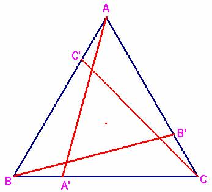
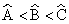

Problema 87.-
Dado un triángulo ABC, y un punto A´ sobre el lado BC.
Tomemos los puntos B´ y C´ sobre AC y AB respectivamente de forma que AA´=BB´=CC´.
Demuestra que si BA´=CB´=AC´ entonces ABC es equilátero.
(Olimpiadas Prueba de clasificación segunda ronda( 1999), Alemania)
Solución de Damián Aranda Ballesteros, profesor de Matemáticas del IES Blas Infante de Córdoba (2 de abril de 2003)

Usaremos las siguientes notaciones:
AB=c; BC=a; CA=b;
AA’=BB’=CC’=m; BA’=CB’=AC'=x
Sean los triángulos AA’B; BB’C y CC’B. En ellos se verifican las relaciones:
En AA’B; m2 = x2 + c2 - 2cx cos B (1)
En BB’C; m2 = x2 + a2 - 2ax cos C (2)
En CC’A; m2 = x2 + b2 - 2bx cos A (3)
Restando (1) y (2) por un lado y (2) y (3) por otro, obtenemos:
, (4) de donde resulta la igualdad:
(a2-c2)∙(a×cosC-b×cosA)-(a2-b2)∙(a×cosC-c×cosB)=0 y, teniendo en cuenta que:
a=2R∙senA; b= 2R∙senB; c=2R∙senC, donde R es el radio de
la circunferencia circunscrita al triángulo ABC, podemos expresar (4) de este
otro modo:
(a2-c2)∙(
2R∙senA cosC-2R∙senB cosA)-(a2-b2)∙(
2R∙senA cosC-2R∙senC cosB)=0
,
Simplificando términos obtenemos por fin:
(b2-c2)∙senA cosC +(c2-a2)∙senB cosA+ (a2-b2)∙senC cosB = 0 (5)
Examinemos con mayor detalle esta última igualdad (5).
(b2-c2)∙senA cosC +(c2-a2)∙senB cosA+ (a2-b2)∙senC cosB = 0
De ella deducimos que si dos de los lados a, b y c son iguales entonces necesariamente el tercer lado también coincide con los dos primeros. Si el triángulo es isósceles entonces es equilátero. A saber:
*Si b = c entonces se tiene que <B = <C y, consecuentemente: senB = senC ; cosB = cosC.
Luego la identidad (5) se reduce así a esta otra:
(b2-a2)×senB×cosA+
(a2-b2)×senB×cosB
=0; (b2-a2)×[senB×cosA-senB×cosB]
=0;
senB×(b2-a2)×[cosA-cosB] =0;
Ahora bien, si senB = 0, entonces <B = 0º y esto es ABSURDO. Luego senB
no es 0 y de esta manera, o bien b2-a2
= 0 o bien, cosA - cosB = 0.
Cualesquiera de ambos casos implica la igualdad b = a = c.
*Veamos ahora que es imposible que no haya dos lados iguales. Es decir, si
suponemos que los tres lados son distintos llegaremos a una contradicción: 
Sean los lados a, b, c ordenados de la manera a< b< c.
De esta ordenación deducimos que
.
En cuanto a los senos se tendrá por el contrario que:
Teniendo en cuenta estos dos hechos, podemos mayorar así las siguientes expresiones:
(b2-c2)∙senA
cosC < (b2-c2)∙
senC cosA
(c2-a2)∙senB
cosA < (c2-a2)∙
senC cosA
(a2-b2)∙senC
cosB < (a2-b2)∙
senC cosA
Sumando las tres desigualdades por columnas obtenemos:
(b2-c2)∙senA cosC +(c2-a2)∙senB cosA+ (a2-b2)∙senC cosB = 0 < 0, lo cual es evidentemente absurdo y, por tanto no puede darse esta posibilidad, c.q.d.
Saludos de F. Damián Aranda Ballesteros.